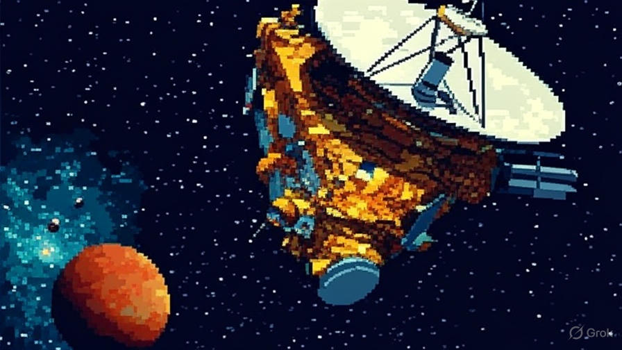
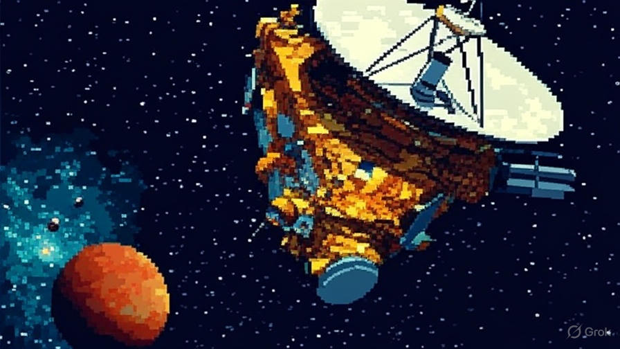
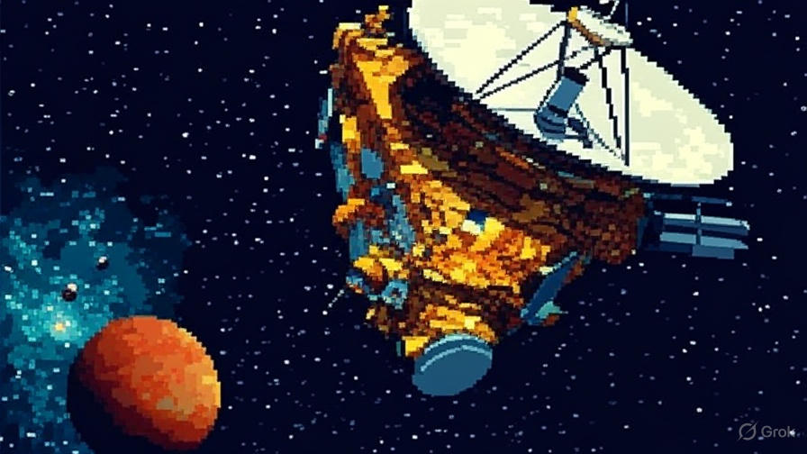

Type: Dwarf planet (Kuiper Belt)
Diameter: ~1,434 km
Mass: ~0.0007× Earth’s mass
Moons: 1 (MK2)
Length of day: ≈ 7.8 hours
Length of year: ≈ 305 Earth years
Distance from Sun: ~6.8–7.6 billion km
Average temperature: ≈ −243°C
Composition: Rock, ices, methane on surface
Makemake is a small, icy world with a bright surface coated in methane and other ices. It has a very thin atmosphere when near perihelion and otherwise is nearly airless. Surface conditions are extremely cold and dark.
Makemake has been observed from Earth and space telescopes; no dedicated spacecraft has visited it yet. Observations reveal a bright, methane-rich surface and at least one small moon discovered in recent years.
No specific missions to Makemake are currently scheduled, but future Kuiper Belt survey missions and proposals may include flybys to study dwarf planets like Makemake and its moon.
